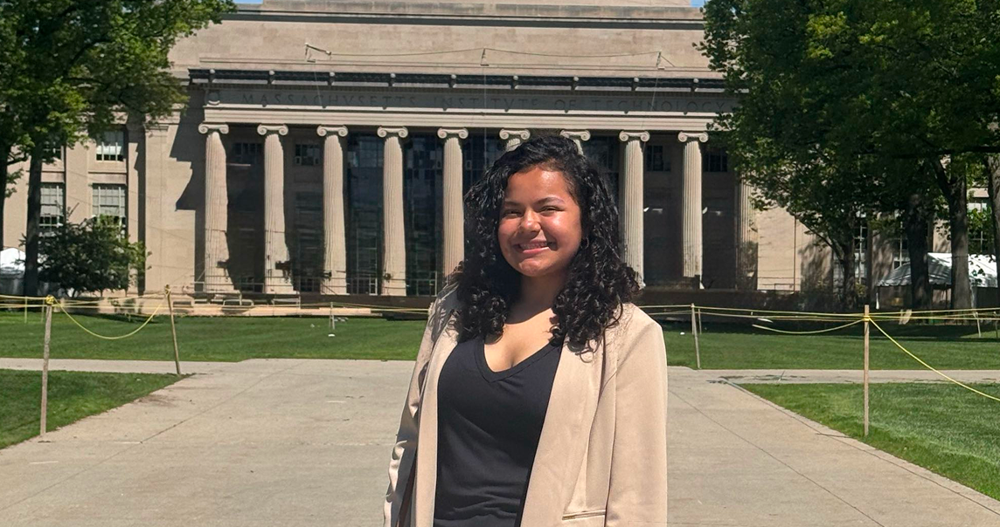
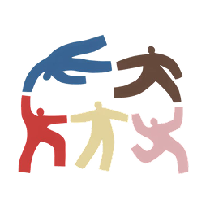
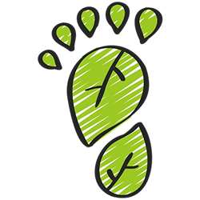
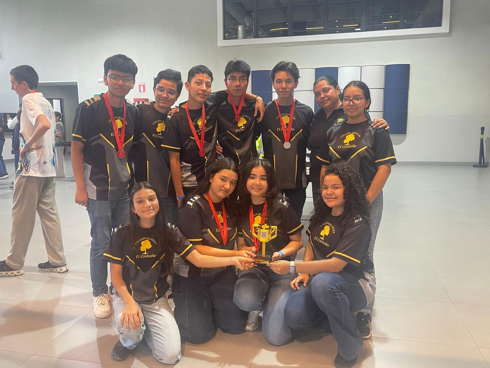
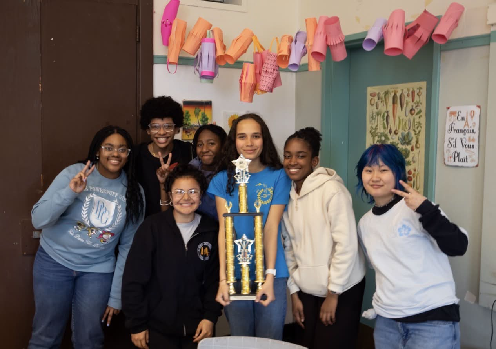
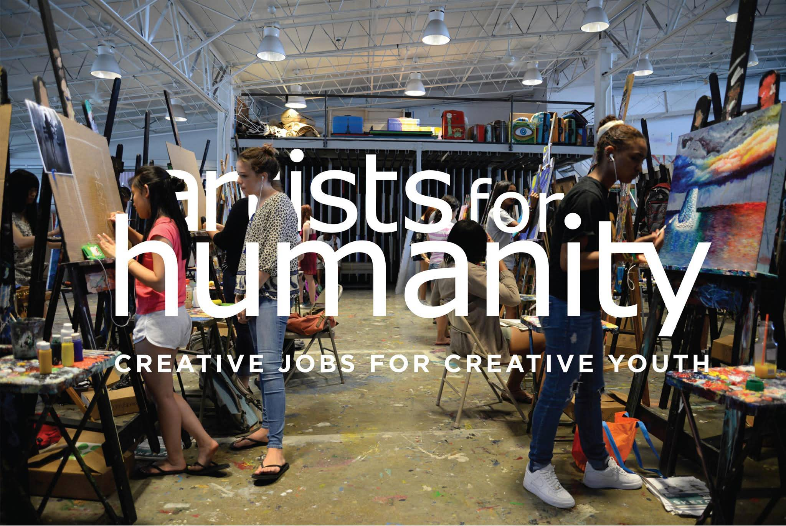
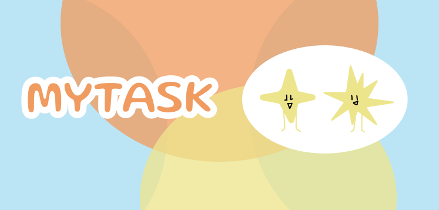
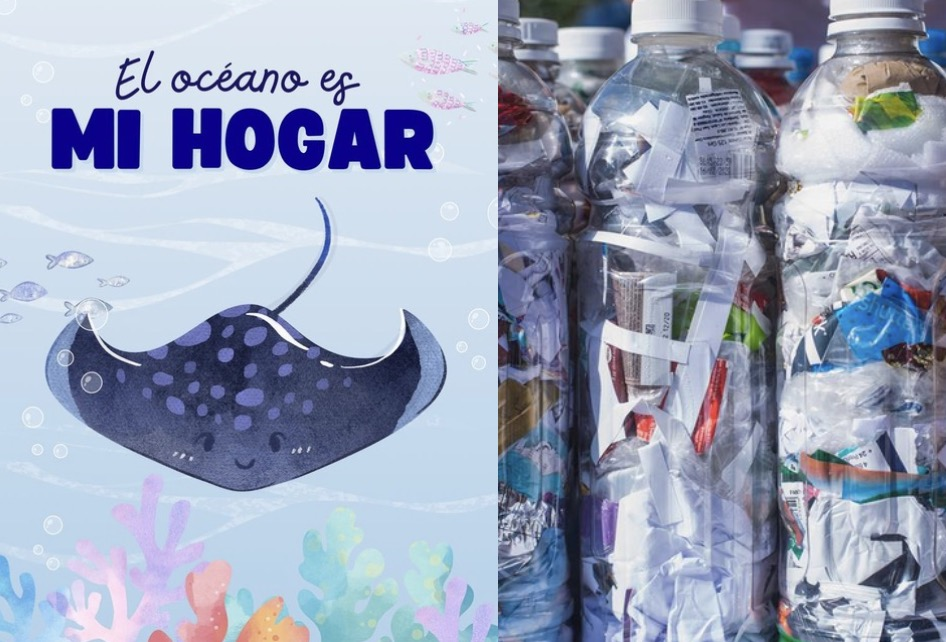

Naomi Castellanos

About me

Contact me


Naomi Castellanos is a carefree Guatemalan woman who believes in the power of solidarity and human connection. She came to the United States with the desire to explore new perspectives, learn from different cultures, and connect with people and ideas that help her continue to evolve and grow. She values life deeply and approaches every experience with curiosity, gratitude, and an open heart.
Running has become an important part of Naomi’s journey. For her, it is more than a physical activity—it is a moment of freedom, reflection, and self-discovery. As she runs, she feels the wind around her, finds strength in every step, and reminds herself of her ability to overcome challenges. Running represents her determination to keep moving forward, embrace change, and continue shining wherever life takes her.
Naomi’s vision is to continue exploring the communities around her and understanding the experiences, needs, and challenges of the people within them. By observing daily life closely and listening to different perspectives, she hopes to create meaningful inventions and solutions that improve the lives of others. Her goal is to use curiosity, creativity, and empathy to design things that can benefit everyone.


Naomi’s vision is to raise awareness to the community around her of damage humans had made to the Earth, where living things live harmoniously. For Naomi it is important to take either big or little actions to prevent further damage and contribute to a healthier planet for future generations.
VISION
COMMUNITIES
Education
Colegio Bilingüe
El Castaño
2015 - 2024
- -Robotic team

Education
Boston Latin Academy
2025 -Class of 2029
- -Debate
- -Hack Club leader
- -Track and Field
- -Photographer

Experience
Artist For Humanity
- -Creative Tech co-worker

PROJECTS
COLLABORATIVE
PERSONAL

PROJECTS
COLLABORATIVE
MYTASK
Mytask is a safety digital space for everybody, including users whom may have ADHD and depression, to support their mental health while facilitating a deeper concentration for those who daily procrastinate on their daily tasks.
London James and
Naomi Castellanos - AFH


PERSONAL
SaveTime
SaveTime is an intelligent laundry-folding robot designed for people who often leave folding clothes until the end. It automatically folds clean laundry quickly and neatly. Whether you're busy, tired, or simply dislike folding clothes, SaveTime makes finishing laundry easier and more convenient.